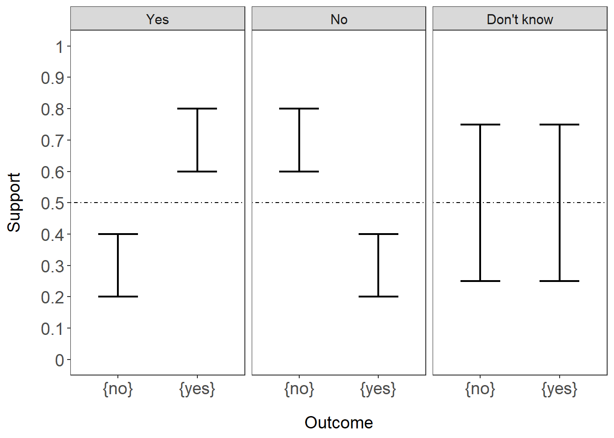

library(tidyverse) # data wrangling, visualization
library(EvCombR) # package for dempster shafer
##ggplot2 settings
T<-theme_bw()+theme(,text=element_text(size=14),
axis.text=element_text(size=14),
panel.grid.major=element_blank(),
panel.grid.minor.x = element_blank(),
panel.grid = element_blank(),
legend.key = element_blank(), axis.title.y=element_text(margin=margin(t=0,r=15,b=0,l=0)),
axis.title.x=element_text(margin=margin(t=15,r=,b=0,l=0)))+
theme(legend.position="none")11 Dempster-Shafer Theory, notes
12 Introduction - plain English understanding
Dempster-Shafer Theory (DST) is a way to account for uncertainty when making a decision. For example, imagine the answer to a question has two mutually exclusive outcomes: yes or no. Then, DST, would describe this as the frame of discernment, or \(\theta\), where,
\[ \theta = \{yes,no\}\] But, when we try to estimate these answers, there are multiple possibilities, especially if you’re unsure. For example, sometimes when you measure something, you’re not sure if the answer is yes or no. All possible states are represented as a power set, \(2^\theta\), such that
\[2^\theta = \{\{\emptyset\},\{yes\},\{no\},\{\theta\}\}\] and notice that \(\theta = \{yes,no\}\), which is the set where you’re sure whether the answer is yes or no.
Now, each set can have a numerical value assigned to them and can be expressed as:
\[m:2^\theta -> [0,1]\]
and the value is referred to as a mass. From the formulation above, the mass of the powerset is between 0 and 1, referred to as the mass function. The sum of the masses of the powerset add up to 1:
\[\sum_{A\in2^\theta} m(A)=1\]. In other words, for all members (A) within the powerset \(2^\theta\), the sum of all these members is 1. Naturally, values closer to 1 means there is more evidence for that particular set (m(A)). For example,
| \(2^\theta\) | Mass |
|---|---|
| {yes} | 0.2 |
| {no} | 0.6 |
| {yes, no} | 0.2 |
| {\(\emptyset\)} | 0 |
the mass assignments all sum to 1. Notice that the \(\emptyset\) is 0, which is a feature of DST expressed in this way. And notice that typically, in say a logistic regression, the posterior probabilities are a way to fill in these masses for a {yes} or {no} answer.
Most notably, the support for what we care about, \(\theta\) have overlaps in the sets. For example, {yes,no} overlaps with {yes}. So how can we express the real answer given this framework? DST attempts to do this by forming two levels of support for an answer in \(\theta\) such that:
- The belief is the lowest level of support
- The plausibility is the highest level of support
The in {yes} is the sum of the masses of (B) of {yes}, expressed as:
\[bel(\{yes\}) = \sum_{B\subset \{yes\}} m(B).\]
The of {yes} is the sum of all masses of sets B that with {yes}, expressed as:
\[pl(\{yes\} = \sum_{B\cap \{yes\}} m(B).\]
In our example from the mass assignments, they would induce the following beliefs and plausibilities:
| \(2^\theta\) | Mass | Belief | Plausibility |
|---|---|---|---|
| {yes} | 0.2 | 0.2 | 0.4 |
| {no} | 0.6 | 0.6 | 0.8 |
| {yes, no} | 0.2 | 1.0 | 1.0 |
| {\(\emptyset\)} | 0.0 | 0.0 | 0.0 |
For example, the belief in {yes} is the mass of {yes} (0.2). The plausibility in {yes} is the mass of {yes} and {yes,no} because they intersect (0.2 + 0.2 = 0.4).
13 Possible ways to decide based on beliefs and plausibility
Given this evidence, how do we decide on whether the answer to the question? There would be 3 outcomes instead of 2:
- Yes
- No
- Don’t know ({yes,no})
I’ll simulate some data and show how. Load packages first.
# simulate some beliefs
# and plausibilities
# that would lead to each type of outcome
outcome<-rep(c("{yes}","{no}","{yes,no}"),3)
decision<-c(rep("No",3),rep(c("Yes"),3),rep(c("Don't know"),3))
belief<-c(c(.2,.6,.2),c(.6,.2,.2),c(.25,.25,.5))
pl<-c(c(0.4,.8,1),c(0.8,.4,1),c(0.75,.75,1))
d<-data.frame(outcome,decision,belief,pl)
d<-d%>%
dplyr::filter(outcome!="{yes,no}")
#filter out {yes,no}
d$decision<-factor(d$decision,levels=c("Yes","No","Don't know"))
#plot it out
ggplot(d,aes(x=outcome))+
geom_errorbar(aes(ymax=pl,ymin=belief),
width=.5,linewidth=.85)+
facet_wrap(~decision)+
scale_y_continuous(limits = c(0,1),
breaks=seq(0,1,.1),
labels=seq(0,1,.1))+
ylab("Support")+xlab("Outcome")+
geom_hline(yintercept=.5,linetype="dotdash")+T
Here, you can see that the lower bound of the range in each outcome is the belief and the upper bound of the range is the plausibility. Each panel would show the decision being made. Notice that in the “Don’t know” panel, the levels of support overlap. There are ways to make decisions even if the levels of support overlap but we won’t get into that.
DST is very flexible and there are no set rules for constructing mass functions.
Typically, posterior probabilities from say a logistic regression would show a flat level of support (only the belief). However, the posterior probabilities can be restructured into a mass function by accounting for model uncertainty. Model uncertainty can be extracted from a confusion matrix. So the posterior probability for yes would be scaled by the positive predictive value, which is the degree of confidence in the model to make a yes call. This is how we can account for uncertainty when using a predictive model.
14 Simulations of model uncertainty
Here, I’ll simulate posterior probabilities, and model uncertainties to determine how it impacts decision making.
#simulate a range of model uncertainty
#both in the positive predictive value
# and negative predictive value
## simulate a 1000 samples with posterior probs
yes<-rep(seq(0,1,.1),11)
#number of different model uncertainties
mu<-sort(rep(seq(0,1,.1),11)) #simulate model
# uncertainty from 0 to 1 in .1 steps
dat<-data.frame(cbind(yes,mu))
dat$no<- (1-dat$yes) # get the no post prob
#assuming model uncertainty is the same
# same PPV and NPV
##now we can construct mass assignments
dat<-dat%>%
mutate(y.mass=yes*mu,n.mass=no*mu,yn.mass=1-y.mass-n.mass,y.pl=yn.mass+y.mass,n.pl=yn.mass+n.mass)
##lets set up factors by decision point
#if the uppper bound of yes is less than
#lower bound of no, then decide NO
#if upper bound of no is less than
#lower bound of yes, then decide YES
dat<-dat%>%
mutate(decision=ifelse(y.pl<n.mass,"No",ifelse(n.pl<y.mass,"Yes","Don't know")))
glimpse(dat)Rows: 121
Columns: 9
$ yes <dbl> 0.0, 0.1, 0.2, 0.3, 0.4, 0.5, 0.6, 0.7, 0.8, 0.9, 1.0, 0.0, 0…
$ mu <dbl> 0.0, 0.0, 0.0, 0.0, 0.0, 0.0, 0.0, 0.0, 0.0, 0.0, 0.0, 0.1, 0…
$ no <dbl> 1.0, 0.9, 0.8, 0.7, 0.6, 0.5, 0.4, 0.3, 0.2, 0.1, 0.0, 1.0, 0…
$ y.mass <dbl> 0.00, 0.00, 0.00, 0.00, 0.00, 0.00, 0.00, 0.00, 0.00, 0.00, 0…
$ n.mass <dbl> 0.00, 0.00, 0.00, 0.00, 0.00, 0.00, 0.00, 0.00, 0.00, 0.00, 0…
$ yn.mass <dbl> 1.0, 1.0, 1.0, 1.0, 1.0, 1.0, 1.0, 1.0, 1.0, 1.0, 1.0, 0.9, 0…
$ y.pl <dbl> 1.00, 1.00, 1.00, 1.00, 1.00, 1.00, 1.00, 1.00, 1.00, 1.00, 1…
$ n.pl <dbl> 1.00, 1.00, 1.00, 1.00, 1.00, 1.00, 1.00, 1.00, 1.00, 1.00, 1…
$ decision <chr> "Don't know", "Don't know", "Don't know", "Don't know", "Don'…#need to convert to long
d.long<-dat%>%
pivot_longer(cols=y.mass:n.mass,names_to = "Outcome",values_to = "support")%>%
mutate(plaus=support+yn.mass)
##let's plot out the simulation
ggplot(d.long,aes(x=yes,colour=decision))+
geom_errorbar(aes(ymax=plaus,ymin=support),
width=.5,linewidth=.85)+
facet_wrap(~mu,nrow=4)+
scale_y_continuous(limits = c(0,1),
breaks=seq(0,1,.1),
labels=seq(0,1,.1))+
ylab("Support")+xlab("Simulated Posterior Probabilities")+
geom_hline(yintercept=.5,linetype="dotdash")+T+theme(legend.position = "top")
Thoughts:
What you can see is that decisions can’t be made if there is too much uncertainty (0-0.5 model performance). But, at 0.6 model performance, posterior probabilities have to be very high in order to make a confident decision. And then you can see traditionally, if we assume a perfect model, model performance = 1, then the support bands are flat, which is typically how we treat predictive models in general.
15 Summary
DST offers a flexible and creative approach to accounting for uncertainty when making a decision. DST re-frames sources of evidence such that uncertain cases can have some level of evidence assigned to it. The assignment of the degree of evidence, or masses can resemble probabilities across all answers. The approach outlined here involves restructuring poster probabilities from a model into masses. This is done by scaling the posterior probabilities by model performance, which is derived from the confusion matrix. In traditional machine learning approaches, data are split into training and testing. The confusion matrix of the model applied to the testing dataset could be used. Based on the masses, then the degree of support can be calculated to help inform decision-making.
16 RshinyApp
Try plugging in your own posterior probabilities or masses and plug in your own PPV or NPV in this RShinyApp.
17 References
- Rathman JF, Yang C, Zhou H. Dempster-Shafer theory for combining in silico evidence and estimating uncertainty in chemical risk assessment. Comput Toxicol. 2018;6:16-31. doi:10.1016/j.comtox.2018.03.001
18 Session info
sessionInfo()R version 4.5.0 (2025-04-11 ucrt)
Platform: x86_64-w64-mingw32/x64
Running under: Windows 11 x64 (build 26100)
Matrix products: default
LAPACK version 3.12.1
locale:
[1] LC_COLLATE=English_United States.utf8
[2] LC_CTYPE=English_United States.utf8
[3] LC_MONETARY=English_United States.utf8
[4] LC_NUMERIC=C
[5] LC_TIME=English_United States.utf8
time zone: America/New_York
tzcode source: internal
attached base packages:
[1] stats graphics grDevices utils datasets methods base
other attached packages:
[1] EvCombR_0.1-4 lubridate_1.9.4 forcats_1.0.0 stringr_1.5.1
[5] dplyr_1.1.4 purrr_1.0.4 readr_2.1.5 tidyr_1.3.1
[9] tibble_3.2.1 ggplot2_3.5.2 tidyverse_2.0.0
loaded via a namespace (and not attached):
[1] gtable_0.3.6 jsonlite_2.0.0 compiler_4.5.0 tidyselect_1.2.1
[5] scales_1.3.0 yaml_2.3.10 fastmap_1.2.0 R6_2.6.1
[9] labeling_0.4.3 generics_0.1.3 knitr_1.50 htmlwidgets_1.6.4
[13] munsell_0.5.1 pillar_1.10.2 tzdb_0.5.0 rlang_1.1.6
[17] stringi_1.8.7 xfun_0.52 timechange_0.3.0 cli_3.6.4
[21] withr_3.0.2 magrittr_2.0.3 digest_0.6.37 grid_4.5.0
[25] hms_1.1.3 lifecycle_1.0.4 vctrs_0.6.5 evaluate_1.0.3
[29] glue_1.8.0 farver_2.1.2 colorspace_2.1-1 rmarkdown_2.29
[33] tools_4.5.0 pkgconfig_2.0.3 htmltools_0.5.8.1